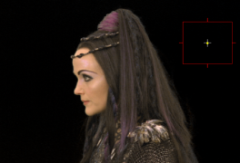

本节介绍如何在中使用蓝色/绿色屏幕键控器 ChromaKeyer 核武器 。ChromaKeyer 可以利用现代 gpu 和多核 cpu，在用于合成 核武器 的节点图。ChromaKeyer 也可作为软效果 核武器工作室 的时间线环境。
下面的图像显示绿色屏幕前景和要合成的背景。
|
|
|
| 前景 | 背景 |
| 1。 | 开始 核武器 并读取前景和背景图像。从 Keyer 菜单，选择 ChromaKeyer 并附上观众。 |
| 2. | 在 ChromaKeyer 属性 面板中，单击旁边的色样 屏幕颜色 激活滴管。 |
| 3. | Ctrl / Cmd + 转变 + 单击并将矩形区域拖动到查看器中的绿色像素上。这将平均选定区域中的像素以产生更好的关键点。 |
|
|
 |
在某些情况下，这就是你执行键所需要做的一切，因为选择屏幕颜色会产生屏幕哑光，并鄙视前景。
| 4. | 将前景合并在背景上，以产生最终的 comp。 |
选择屏幕颜色对于很多键来说可能已经足够了，但是里面还有更多的工具 核武器 这可以用来处理更复杂的镜头。请参阅 改善遮罩 , 绝望和颜色替换 ,和 多程键控 欲了解更多信息。
|
|